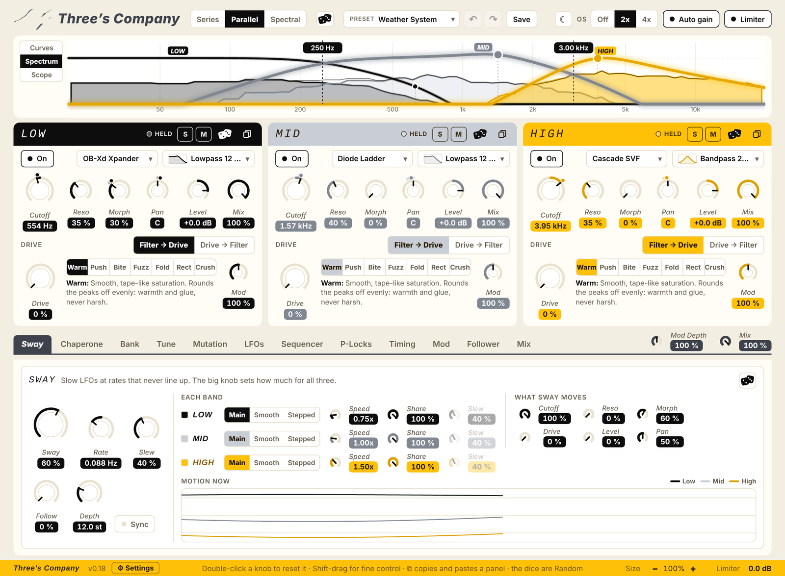
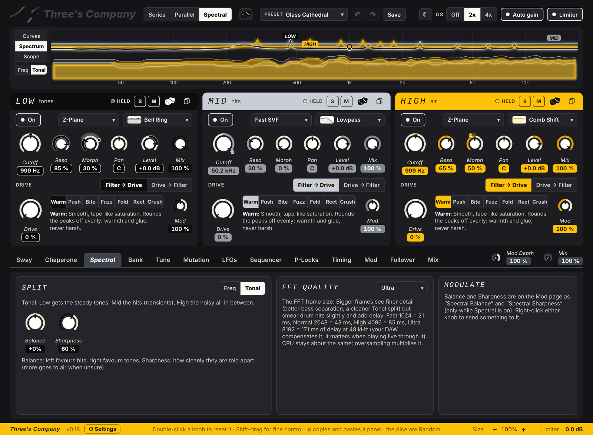
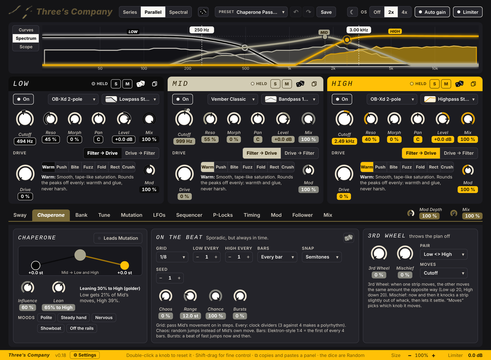
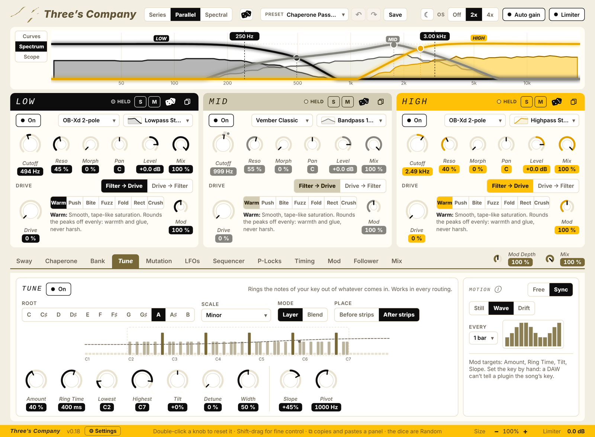
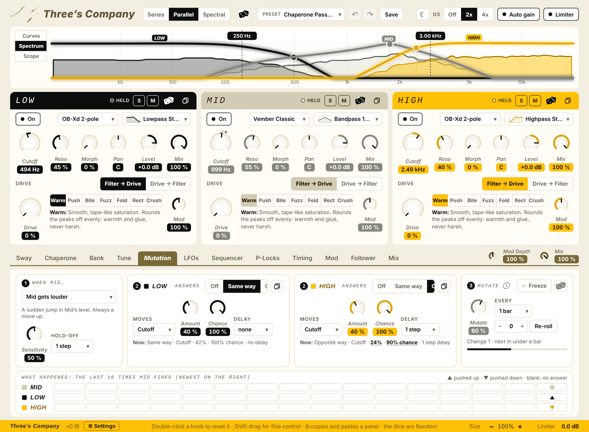

Three's Company
Three filters that move together.
A free filter effect by Otis Kanno for Mac and Windows · CLAP · VST3 · AU
Always the latest version · free · all versions

Install in a minute
Windows
- Right-click the zip → Properties → tick Unblock → OK. Then right-click → Extract All.
- Copy
Threes Company.clap into C:\Program Files\Common Files\CLAP\ and the Threes Company.vst3 folder into C:\Program Files\Common Files\VST3\.
- In FL Studio: Options → Manage plugins → Find installed plugins. In other DAWs, rescan plugins.
Mac
- Double-click the zip to unzip it.
- In Finder press ⌘⇧G and drag each file in:
.clap → ~/Library/Audio/Plug-Ins/CLAP, .vst3 → …/VST3, .component → …/Components.
- Open Terminal and paste the one line from the READ ME FIRST (it lets macOS open the plugin), then rescan plugins in your DAW.
Each zip has a READ ME FIRST with every step and fix, the user manual and a one-page quick reference.
What it does

Spectral, Tonal mode. Steady tones, hits and air each get their own strip.

The Chaperone. Mid leads; Low and High follow it, always in time.

Tune. Rings the notes of your key out of whatever comes in.

Mutation. When Mid moves, Low and High answer back.
Learn it